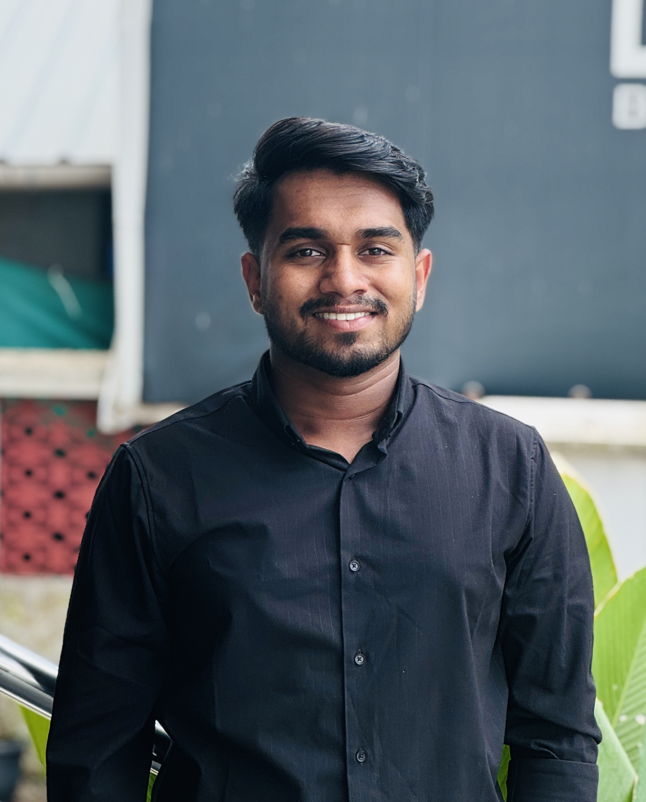

I am Akshay P, currently pursuing Machine Learning training through Brototype as part of a significant career transition into the AI/ML field. I previously worked for 4 years and 1 month as an Operations Engineer at 6D Technologies, a renowned telecom solutions company.
During my professional career, I worked extensively on system monitoring, infrastructure maintenance, deployment management, and incident resolution in critical telecom BSS (Business Support Systems) environments.
My deep-rooted passion for programming and solving real-world problems autonomously has motivated me to move toward the frontiers of Artificial Intelligence and Machine Learning. I strive to build highly efficient models and intelligent systems.
Brototype
Intensive hands-on training focusing on Python, Data Science, Machine Learning Algorithms, and Deep Learning concepts to transition into an AI/ML role.
6D Technologies
Managing large-scale telecom BSS infrastructure, handling complex deployments, automating core tasks, and providing top-level tier support across international environments.
College of Engineering Aranmula
Kerala Technological University